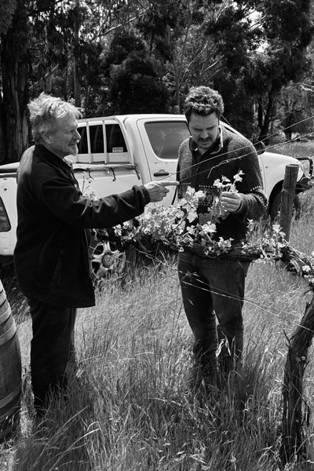

Desde muy pequeño mi abuelo solía llevarme por los viñedos de nuestra bodega familiar en Mendoza, Argentina. Recuerdo caminar bajo las marquesinas verdes en medio del verano y tengo imágenes claras de la felicidad en su rostro sonriente cuando me abrazó y me levantó a los tres años. Desafortunadamente, ese mismo verano, un trágico accidente se cobró la vida de mi abuelo y solo años después, después de crecer en la ciudad, volví a familiarizarme con los vinos y la vid. Haciendo la carrera de ingeniero en Agricultura, me especialicé en viticultura y enología, elaborando tintos, blancos y espumantes, y la última, la que más me atrapó.
El destino, la fortuna o simplemente la vida me trajeron a Australia y trabajé añadas en Langhorne Creek, Adelaide Hills y McLaren Vale. Desde el momento en que llegué encontré la felicidad en compañía de buenos amigos, la belleza del entorno, los grandes vinos y conocí a mi esposa. Inspirados por mi entusiasmo y pasión por el vino artesanal, mis suegros se involucraron y ayudaron a hacer realidad el primer año de cosecha de prueba. Fue un asunto para toda la familia, desde la recolección manual de las uvas hasta el transporte y, por supuesto, ¡el muestreo! Para la ocasión especial de nuestra boda, se sirvió un vino espumoso joven vibrante y fresco a las mesas y a los invitados a la boda. Terminada la boda, la vida continuaba y la segunda cosecha se acercaba junto con un bebé en camino. 2011 fue un año difícil para todos en la industria del vino, los rojos prácticamente no se recolectaban en Adelaide Hills y el mildiú polvoriento abrió la puerta para que la botritis terminara el trabajo de un año inesperado para muchas personas. Sin embargo, después de buscar muchas propiedades, encontramos uvas excepcionales en Adelaide Hills.
